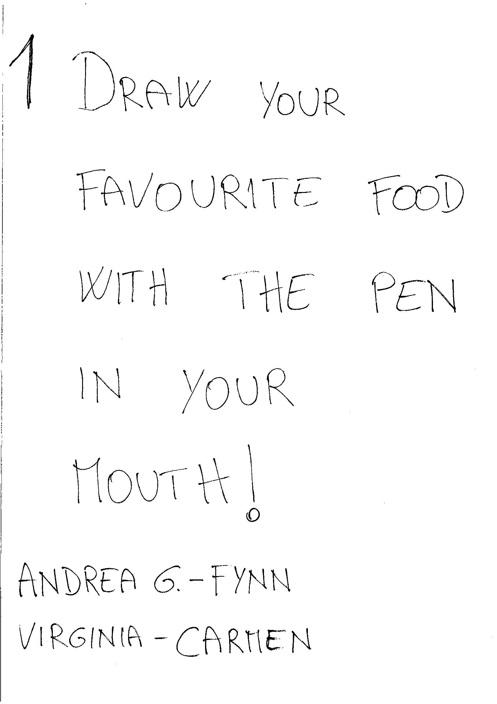
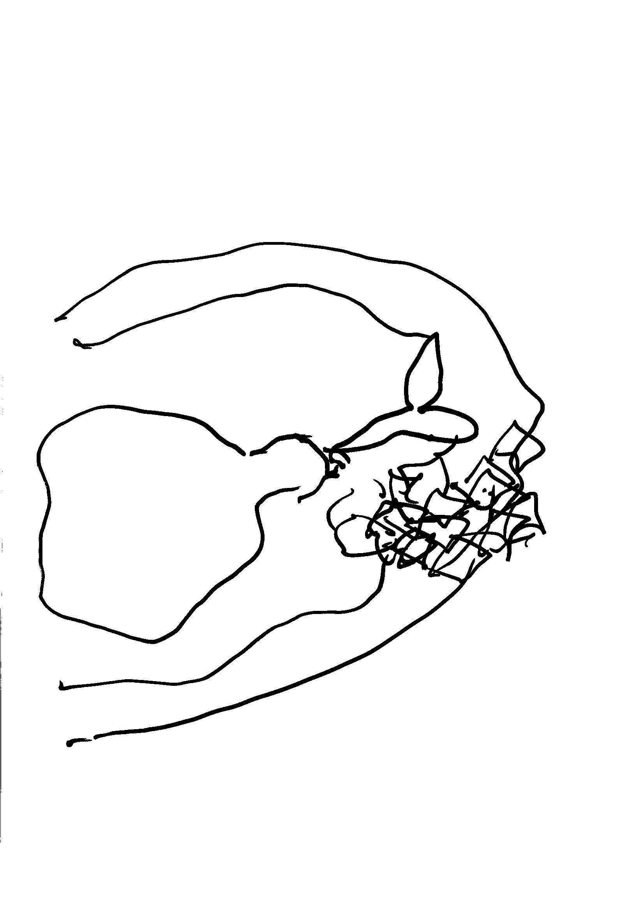
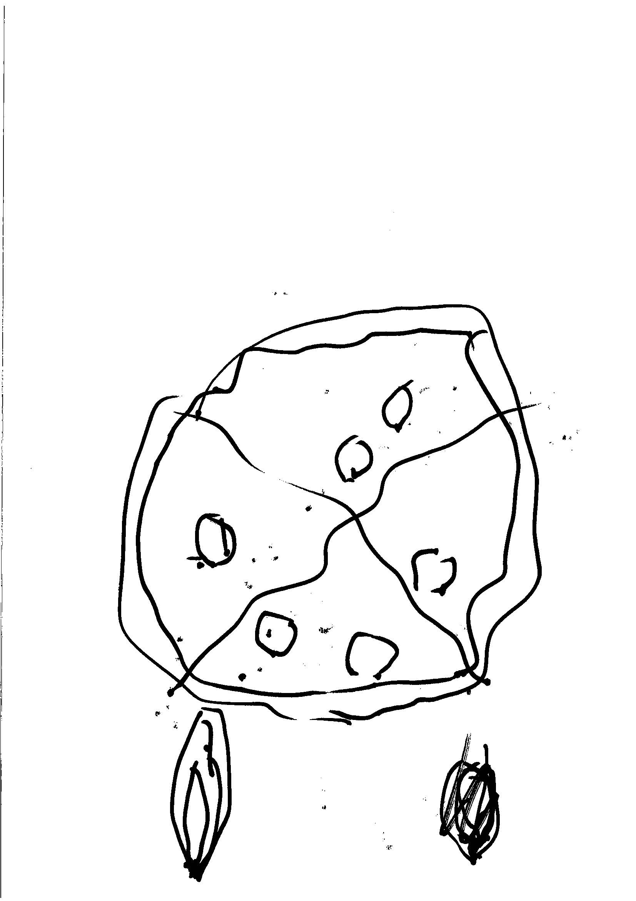
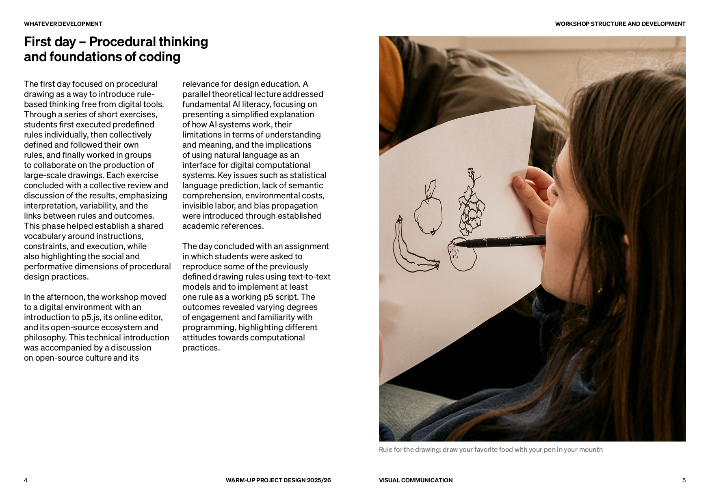
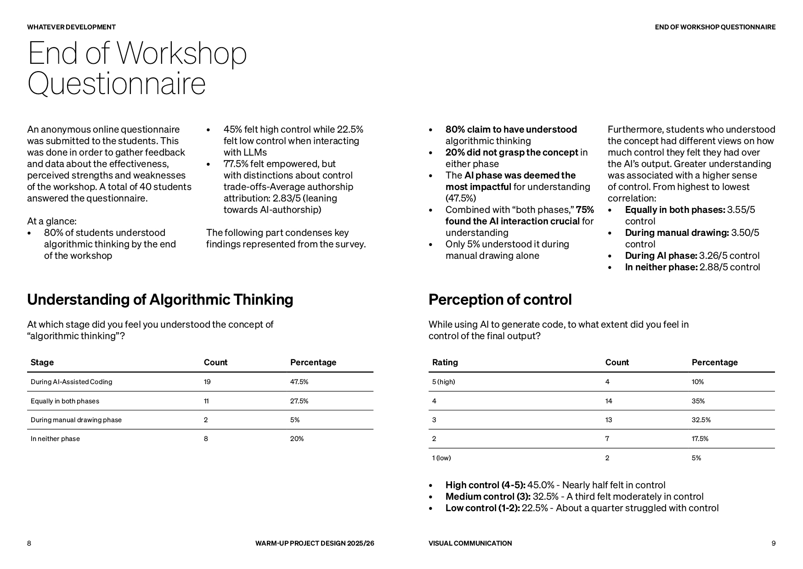

02 / 06
Vibe Coding & Identity
Panoramica
Nell'ultimo modulo del WUP di Visual Communication alla Libera Università di Bolzano, siamo stati introdotti alla pratica del vibe coding, un approccio in cui si descrive il comportamento visivo al codice attraverso il linguaggio naturale, lasciando che l'AI e la sintesi generativa costruiscano il risultato. Il progetto WhateverDev() è nato in questo contesto: quattro tool sviluppati con p5.js, ognuno pensato come strumento generativo e sperimentale. Il workshop è stato preceduto da una fase di disegno procedurale analogico, documentata nel booklet della visual identity del progetto.
Disegno procedurale seguendo regole date, ogni studente interpreta le istruzioni con la propria mano



Disegni procedurali del booklet, dal prompt scritto all'interpretazione grafica
Approccio
Il workshop ha preso le mosse dall'analogico: ogni studente riceveva un prompt scritto con istruzioni precise, disegna il tuo cibo preferito tenendo la penna in bocca, scrivi l'alfabeto al contrario, e doveva eseguirle letteralmente. L'obiettivo era capire cosa significa dare istruzioni a un sistema che non interpreta, ma esegue.
Questa fase ha gettato le basi concettuali per il vibe coding: anche nel codice, la macchina esegue ciò che le si descrive, con la differenza che il linguaggio è formale e il risultato visivo emerge dall'interazione tra logica e parametro. I disegni sono stati raccolti e pubblicati nel booklet visivo del progetto.
Processo
Ogni tool è stato costruito partendo da una domanda visiva precisa: cosa succede se simulo una reazione chimica? Come si comporta il testo quando diventa superficie? I quattro strumenti sono stati sviluppati con p5.js attraverso il vibe coding, descrivendo il comportamento desiderato al modello e raffinando il risultato iterativamente.
Il processo ha reso evidente come il codice, quando usato come mezzo espressivo, richieda lo stesso tipo di intenzione del disegno a mano: bisogna sapere cosa si vuole prima di descriverlo. La differenza è che l'output è parametrico e infinitamente variabile.
whateverDev(), copertina del booklet di visual identity del progetto

Pagine 4–5, First day: Procedural thinking and foundations of coding

Pagine 8–9, End of Workshop Questionnaire: dati su controllo e authorship
Approccio
Il booklet raccoglie e documenta l'intero percorso del workshop: i prompt, i disegni procedurali degli studenti e gli output dei quattro tool. La copertina riprende il "Chaos Engine", un disegno realizzato seguendo le regole del Whatever Development Ecosystem, e lo stampa in nero su fondo rosso, stabilendo un'identità visiva diretta e riconoscibile.
Il progetto è stato sviluppato all'interno del Whatever Development Ecosystem, un framework didattico e creativo ideato da Michele Maffei per esplorare il confine tra regola e generazione, tra istruzione umana e output computazionale.
Università
Libera Università di Bolzano
Corso
WUP – Visual Communication
Facilitatori
Antonino Benincasa
Rocco Lorenzo Modugno
Andrea Maffei
Fotografia
Andrea Maffei
Whatever Development Ecosystem
Michele Maffei
Anno
2025